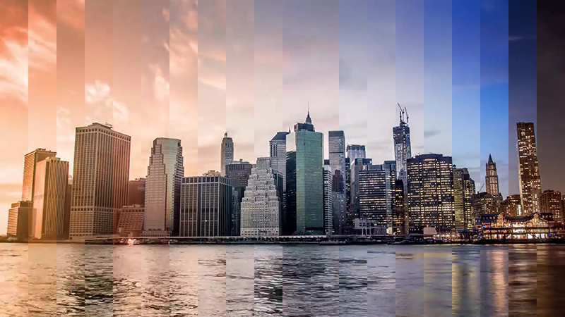

Flowing Time
Spring 2016
Overview
Flowing Time (流光溢彩) is a tool to create photography with unique style. A time-lapse video will be presented with one static image. A transformation from time domain to space domain will be applied to the video; part of each frame will be selected accordingly to frame order on time line. The collage of all selected partial images will present the time-lapse video in one static image.
Documentation
For a quick prototype, I took this youtube time lapse video as test material:
20 frames are selected over the time line, and 1/20 of each selected frame is taken and collage as one static image.

with an okay result, move forward to selected 800 frames(since target image width is 800px) and take one
pixel column from each selected frame and create new image.
For another time lapse video of one street of Shanghai. Following image is obtained:
But the result is not quite nice, because the time lapse video didn't cover enough range of the day.
Future Development
Add GUI to program: a) video clip controller and b) curve controller on frame sampling rate over time.
Shoot time-lapse video and create time based image.